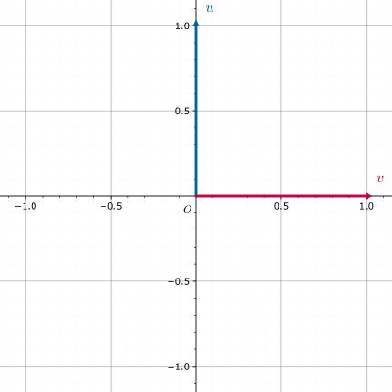
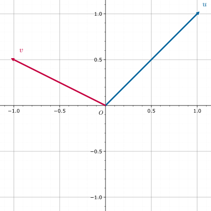
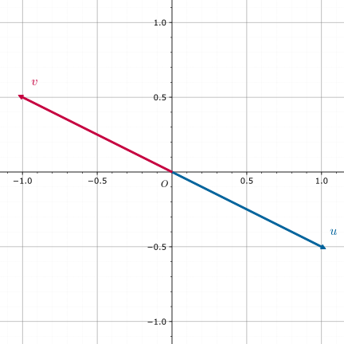
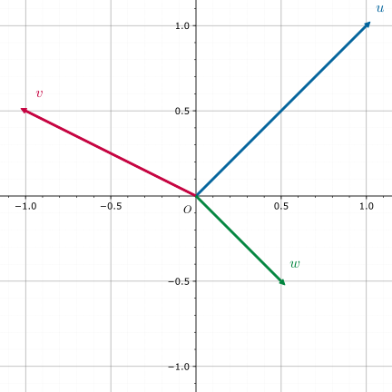

Basis
💾 AI智能摘要 (DeepSeek)
线性基是线性空间的一组极大线性无关向量组，用于描述和构建整个空间。文章从基向量概念出发，推广到一般线性空间，重点讨论了线性基的定义、维数性质及子空间维数公式，并给出正交基等特例。在算法竞赛中主要应用于R^n和Z_2^n空间，是处理线性代数问题的核心工具。证明部分详细推导了基的扩张性和子空间关系。
📖 阅读信息
阅读时间：4 分钟 | 中文字符：1795 | 有效代码行数：5
回想高中数学立体几何中基向量的概念，我们可以在三维欧氏空间中找到一组基向量 \(\boldsymbol{i}\)，\(\boldsymbol{j}\)，\(\boldsymbol{k}\)，之后空间中任意一个向量都可以由这组基向量表示。换句话说，我们可以 通过有限的基向量来描述无限的三维空间，这足以体现基向量的重要性。
三维欧氏空间是特殊的 线性空间，三维欧氏空间的基向量在线性空间中就被推广为了线性基。
OI 中有关线性基的应用一般只涉及两类线性空间：\(n\) 维实线性空间 \(\mathbf{R}^n\) 和 \(n\) 维 布尔域 线性空间 \(\mathbf{Z}_2^n\)，我们会在 应用 一节中详细介绍。若您不熟悉线性代数，则推荐从应用部分开始阅读。
以下会从一般的线性空间出发来介绍线性基，并给出线性基的常见性质。
前置知识：线性空间。
线性基是线性空间的一组基，是研究线性空间的重要工具。
定义¶
称线性空间 \(V\) 的一个极大线性无关组为 \(V\) 的一组 Hamel 基 或 线性基，简称 基。
规定线性空间 \(\{\theta\}\) 的基为空集。
可以证明任意线性空间均存在线性基1，我们定义线性空间 \(V\) 的 维数 为线性基的元素个数（或势），记作 \(\dim V\)。
性质¶
-
对于有限维线性空间 \(V\), 设其维数为 \(n\), 则：
-
\(V\) 中的任意 \(n+1\) 个向量线性相关。
-
\(V\) 中的任意 \(n\) 个线性无关的向量均为 \(V\) 的基。
-
若 \(V\) 中的任意向量均可被向量组 \(a_1,a_2,\dots,a_n\) 线性表出，则其是 \(V\) 的一个基。
证明
任取 \(V\) 中的一组基 \(b_1,b_2,\dots,b_n\), 由已知条件，向量组 \(b_1,b_2,\dots,b_n\) 可被 \(a_1,a_2,\dots,a_n\) 线性表出，故
\[ n=\operatorname{rank}\{b_1,b_2,\dots,b_n\}\leq\operatorname{rank}\{a_1,a_2,\dots,a_n\}\leq n \]因此 \(\operatorname{rank}\{a_1,a_2,\dots,a_n\}=n\)
-
\(V\) 中任意线性无关向量组 \(a_1,a_2,\dots,a_m\) 均可通过插入一些向量使得其变为 \(V\) 的一个基。
-
-
（子空间维数公式）令 \(V_1,V_2\) 是关于 \(\Bbb{P}\) 的有限维线性空间，且 \(V_1+V_2\) 和 \(V_1\cap V_2\) 也是有限维的，则 \(\dim V_1+\dim V_2=\dim(V_1+V_2)+\dim(V_1\cap V_2)\)
证明
设 \(\dim V_1=n_1\),\(\dim V_2=n_2\),\(\dim(V_1\cap V_2)=m\).
取 \(V_1\cap V_2\) 的一组基 \(a_1,a_2,\dots,a_m\), 将其分别扩充为 \(V_1\) 和 \(V_2\) 中的基：\(a_1,a_2,\dots,a_m,b_1,b_2,\dots,b_{n_1-m}\) 和 \(a_1,a_2,\dots,a_m,c_1,c_2,\dots,c_{n_2-m}\).
接下来只需证明向量组 \(a_1,a_2,\dots,a_m,b_1,b_2,\dots,b_{n_1-m},c_1,c_2,\dots,c_{n_2-m}\) 线性无关即可。
设 \(\sum_{i=1}^m r_ia_i+\sum_{i=1}^{n_1-m} s_ib_i+\sum_{i=1}^{n_2-m} t_ic_i=\theta\).
则 \(\sum_{i=1}^{n_2-m} t_ic_i=-\sum_{i=1}^m r_ia_i-\sum_{i=1}^{n_1-m} s_ib_i\).
注意到上式左边在 \(V_2\) 中，右边在 \(V_1\) 中，故两边均在 \(V_1\cap V_2\) 中，因此 \(\sum_{i=1}^{n_2-m} t_ic_i=\sum_{i=1}^m k_ia_i\)
故 \(t_1=t_2=\dots=t_{n_2-m}=k_1=k_2=\dots=k_m=0\), 进而 \(r_1=r_2=\dots=r_m=s_1=s_2=\dots=s_{n_1-m}=t_1=t_2=\dots=t_{n_2-m}=0\)
-
令 \(V_1,V_2\) 是关于 \(\Bbb{P}\) 的有限维线性空间，且 \(V_1+V_2\) 和 \(V_1\cap V_2\) 也是有限维的，则下列诸款等价：
- \(V_1+V_2=V_1\oplus V_2\).
- \(\dim V_1+\dim V_2=\dim(V_1+V_2)\).
- 若 \(a_1,a_2,\dots,a_n\) 是 \(V_1\) 的一组基，\(b_1,b_2,\dots,b_m\) 是 \(V_2\) 的一组基，则 \(a_1,a_2,\dots,a_n,b_1,b_2,\dots,b_m\) 是 \(V_1+V_2\) 的一组基。
Note
1,3 两条可推广到无限维线性空间中
例子¶
考虑 \(\Bbb{R}^2\) 的基。
-
如图

\(u,v\) 是一组基。
-
如图

\(u,v\) 是一组基。
-
如图

\(u,v\) 不是一组基，因为 \(u=-v\).
-
如图

\(u,v,w\) 不是一组基，因为 \(u+4v+6w=\theta\).
正交基与单位正交基¶
若线性空间 \(V\) 的一组基 \(B\) 满足 \(\forall b,b'\in B,~(b,b')\ne 0\iff b=b'\)（即两两正交），则称这组基是 正交基。
若线性空间 \(V\) 的一组正交基 \(B\) 还满足 \(\forall b\in B,~|b|=\sqrt{(b,b)}=1\)，则称这组基是 单位正交基。
任意有限维线性空间 \(V\) 的基都可以通过 Schmidt 正交化 变换为正交基。
应用¶
根据前文内容，我们可以利用线性基实现：
- 求给定向量组的秩；
- 对给定的向量组，找到一组极大线性无关组（或其张成的线性空间的一组基）；
- 向给定的向量组插入某些向量，在插入操作后的向量组中找到一组极大线性无关组（或其张成的线性空间的一组基）；
- 对找到的一组极大线性无关组（或基），判断某向量能否被其线性表出；
- 对找到的一组极大线性无关组（或基），求其张成的线性空间中的特殊元素（如最大元、最小元等）。
在 OI 中，我们一般将 \(n\) 维实线性空间 \(\mathbf{R}^n\) 下的线性基称为 实数线性基，\(n\) 维布尔域线性空间 \(\mathbf{Z}_2^n\) 下的线性基称为 异或线性基。
Tip
\(\mathbf{Z}_2\) 中的加法为异或，乘法为与，可以证明 \(\mathbf{Z}_2\) 是域。
可以证明代数系统 \((\mathbf{Z}_2^n,+,\cdot,\mathbf{Z}_2)\) 是线性空间，其中：
即加法是异或，数乘是与。
以异或线性基为例，我们可以根据给定的一组布尔序列 \(\{x_1,\dots,x_m\}\) 构造出一组异或线性基 \(B=\{b_1,\dots,b_n\}\)，这组基有如下性质：
- \(B\) 中任意非空子集的异或和不为 \(0\)；
- 对 \(X\) 中的任意元素 \(x\)，都可在 \(B\) 中取出若干元素使其异或和为 \(x\)；
- 对任意满足上两条的集合 \(B'\)，其元素个数不会小于 \(B\) 的元素个数。
我们可以利用异或线性基实现：
- 判断一个数能否表示成某数集子集的异或和；
- 求一个数表示成某数集子集异或和的方案数；
- 求某数集子集的最大/最小/第 \(k\) 大/第 \(k\) 小异或和；
- 求一个数在某数集子集异或和中的排名。
构造方法¶
因为异或线性基与实数线性基没有本质差别，所以接下来以异或线性基为例，实数线性基版本的代码只需做一点简单修改即可。
贪心法¶
对原集合的每个数 \(p\) 转为二进制，从高位向低位扫，对于第 \(x\) 位是 \(1\) 的，如果 \(a_x\) 不存在，那么令 \(a_x \leftarrow p\) 并结束扫描，如果存在，令 \(p\leftarrow p~\text{xor}~a_x\)。
查询原集合内任意几个元素 \(\text{xor}\) 的最大值，只需将线性基从高位向低位扫，若 \(\text{xor}\) 上当前扫到的 \(a_x\) 答案变大，就把答案异或上 \(a_x\)。
为什么能行呢？因为从高往低位扫，若当前扫到第 \(i\) 位，意味着可以保证答案的第 \(i\) 位为 \(1\)，且后面没有机会改变第 \(i\) 位。
查询原集合内任意几个元素 \(\text{xor}\) 的最小值，就是线性基集合所有元素中最小的那个。
查询某个数是否能被异或出来，类似于插入，如果最后插入的数 \(p\) 被异或成了 \(0\)，则能被异或出来。
高斯消元法¶
高斯消元法相当于从线性方程组的角度去构造线性基，正确性显然。
性质¶
贪心法构造的线性基具有如下性质：
- 线性基没有异或和为 \(0\) 的子集。
- 线性基中各数二进制最高位不同。
高斯消元法构造出的线性基满足如下性质：
-
高斯消元后的矩阵是一个行简化阶梯形矩阵。
该性质包含了贪心法构造的线性基满足的两条性质
如果不理解这条性质的正确性，可以跳转 高斯消元。
提供一组样例：
二进制表示：
贪心法生成的线性基：
| Text Only | |
|---|---|
高斯消元法生成的线性基：
| Text Only | |
|---|---|
这是一条非常好的性质，能帮我们更方便的解决很多问题。比如：给定一些数，选其中一些异或起来，求异或最大值，如果用贪心法构造线性基，需要再做一遍贪心，如果 ans 的当前位是 0，那么异或一定会更优，否则当前位如果为 1，则一定不会更优；而使用高斯消元法构造线性基后直接将线性基中所有元素都异或起来输出即可。
对于其他比较经典的问题（查询一个数能否被异或得到，查询能被异或得到的第 \(k\) 大数等），高斯消元法得到的线性基也能更加方便地解决。
时间复杂度¶
设向量长度为 \(n\), 总数为 \(m\), 则时间复杂度为 \(O(nm)\). 其中高斯消元法的常数略大。
若是实数线性基，则时间复杂度为 \(O(n^2m)\).
线性基合并¶
线性基的合并只需要暴力处理，即将要合并的一组线性基暴力地插入到另一组线性基即可。单次合并的时间复杂度是 \(O(n^2)\)（异或线性基）或 \(O(n^3)\)（实数线性基）。
线性基求交¶
线性基求交，严格地说就是求它们张成的两个线性空间的交空间的一组线性基。本节介绍两种算法。这两种算法，单次求交的时间复杂度都是 \(O(n^2)\)（异或线性基）或 \(O(n^3)\)（实数线性基）。
朴素算法¶
设要求交的线性基分别是 \(\alpha\) 和 \(\beta\)。线性基求交的算法只需要对线性基暴力合并的算法做如下调整：（以异或线性基为例）
- 将线性基 \(\beta\) 中的向量 \(\beta_j\) 利用 贪心法 尝试插入到 \(\alpha\) 中，并初始化线性基的交 \(\gamma\) 为空集；
- 在插入时，需要记录要插入的向量中，线性基 \(\beta\) 中元素的贡献。具体地，维持一个新向量 \(b\)，初始化为 \(\beta_j\)，而且，如果正在插入的向量与线性基中第 \(x\) 位的向量取了异或，那么贡献 \(b\) 也要与第 \(x\) 位记录的贡献 \(b_x\) 取一次异或；
- 如果插入成功，在线性基的第 \(x\) 位插入了向量 \(\beta_j'\)，就将第 \(x\) 位记录的 \(b_x\) 改为得到 \(\beta_j'\) 的过程中线性基 \(\beta\) 中元素的贡献 \(b\)；
- 如果插入不成功，就将过程中记录到的线性基 \(\beta\) 中元素的贡献 \(b\) 插入到 \(\gamma\) 中。
这样得到的线性基 \(\gamma\) 就是所求的交，当然，该算法同时也求出了线性基的并。
对算法的解释
设合并后的线性基为 \(\{\alpha_1,\cdots,\alpha_m,\beta'_{j_1},\cdots,\beta'_{j_\ell}\}\)，其中，\(\beta'_{j_k}\) 是插入 \(\beta_{j_k}\) 时最后得到的向量。那么，\(\{\alpha_1,\cdots,\alpha_m,\beta_{j_1},\cdots,\beta_{j_\ell}\}\) 同样是一组合并后的线性基。记 \(\beta^+\) 为集合 \(\{\beta_{j_1},\cdots,\beta_{j_\ell}\}\)，则合并后的基可以写作 \(\alpha\cup\beta^+\)。而且，和空间中的每个向量 \(c\) 都可以唯一地表示成
的形式，其中，\(a\in\operatorname{span}\alpha\) 且 \(b\in\operatorname{span}\beta^+\)。这个分解中的 \(b\) 就是前文算法所 试图 记录的「线性基 \(\beta\) 中元素的贡献」。严格地说，只是 \(\beta\) 中最后成功插入的那些向量的贡献。
对于成功的插入，最后记录的 \(b\) 就是该分解中的 \(b\) 项。设 \(\beta_j\in\beta^+\)。初始时，\(\beta_j=0\oplus\beta_j\)，已经是 \(\beta_j\) 在基 \(\alpha\cup\beta^+\) 上的正确的分解。在更新 \(\beta'_j=a\oplus b\) 为 \(\beta'_j\oplus c_x\) 时，因为 \(\beta_j'\oplus c_x=(a\oplus a_x)\oplus(b\oplus b_x)\)，所以，只需要更新 \(b\) 为 \(b\oplus b_x\)，就可以保证分解依然正确。因此，归纳可知，最后插入 \(\beta'_j\) 到合并后的线性基中时，记录的贡献 \(b\) 就是上述分解中的 \(b\) 项。
对于不成功的插入，最后要插入的变量一定会变成 \(0\)，而此时的贡献 \(b\) 要插入到 \(\gamma\) 中。此时，如果重复上面的论证，会发现仍然能够保证在插入过程中总是有 \(\beta_j'=a\oplus b\)，且 \(a\in\operatorname{span}\alpha\)，只是 \(b\) 不再属于 \(\operatorname{span}\beta^+\)。这是因为初始化时，\(\beta_j=0\oplus\beta_j\) 中的 \(\beta_j\notin\beta^+\)。除此之外，贡献更新时异或的项都属于 \(\operatorname{span}\beta^+\)。所以，实际上，有 \(b\oplus\beta_j\in\operatorname{span}\beta^+\)。
那么，为什么将这些插入不成功时的 \(b\) 都插入到 \(\gamma\) 中，就能得到交空间的线性基呢？首先，插入 \(\beta_j\) 不成功，最后一定会得到 \(0=a\oplus b\)，其中，\(a\in\operatorname{span}\alpha\) 且 \(b\in\operatorname{span}(\beta^+\cup\{\beta_j\})\subseteq\operatorname{span}\beta\)。因此，\(b=a\) 必然位于交空间 \(\operatorname{span}\alpha\cap\operatorname{span}\beta\) 中。反过来，设 \(c\) 是交空间中的任意元素，因为 \(c\in\operatorname{span}\beta\)，所以 \(c\) 可以表示为 \(\beta\) 中元素的线性组合（异或和）：
其中，\(\lambda_j\in\{0,1\}\)。对于每一个 \(\beta_j\notin\beta^+\)，记相应的插入到 \(\gamma\) 中的贡献为 \(b_j\)，就有
注意到，\(b_j\) 和 \(c\) 都位于交空间中，因而左侧必然也位于交空间中，故而左侧可以写成 \(\alpha\) 中元素的线性组合；同时，右侧所有项，要么 \(\beta_j\in\beta^+\)，要么 \(\beta_j\notin\beta^+\) 且 \(\beta_j\oplus b_j\in\beta^+\)，故而，右侧实际上是 \(\beta^+\) 中元素的线性组合。但是，\(\alpha\cup\beta^+\) 线性无关，故而所有的系数都是 \(0\)，也就是说 \(c=\bigoplus_{\beta_j\notin\beta^+}\lambda_jb_j\in\operatorname{span}\{b_1,\cdots,b_j\}\)。这就说明了，这些无法插入的向量的贡献 \(b\) 共同张成了交空间。
根据这一解释，过程中维护贡献 \(b\) 的目的，实际上是为了维护分解 \(a\oplus b\)；而且，最后向 \(\gamma\) 插入贡献时也总有 \(a=b\)。所以，无论维护 \(\alpha\) 还是 \(\beta\) 中元素的贡献（即无论维护 \(a\) 还是 \(b\)），得到的结果都是正确的。如果要维护线性基 \(\alpha\) 中元素的贡献，只需要修改初始化时相应贡献的取值：每个 \(\alpha\) 中的向量 \(\alpha_i\) 初始就有贡献 \(\alpha_i\)，而插入的 \(\beta_j\) 初始贡献为 \(0\)。
模板题代码如下：
代码（Library Checker Intersection of \(\mathbf F_2\) vector spaces）
| C++ | |
|---|---|
Zassenhaus 算法¶
另一种等价的做法是 Zassenhaus 算法，它同样可以同时计算出两个线性基的并和交。复杂度和上文完全一致。
具体步骤如下：
- 初始化一个向量长度为 \(2n\) 的线性基 \(\gamma\) 为空，其中的向量写成 \((a,b)\) 的形式，且 \(a\) 和 \(b\) 长度均为 \(n\)；
- 将 \(\alpha\) 中的元素 \(\alpha_i\) 以 \((\alpha_i,\alpha_i)\) 的形式插入 \(\gamma\) 中；
- 将 \(\beta\) 中的元素 \(\beta_j\) 以 \((\beta_j,0)\) 的形式插入 \(\gamma\) 中；
- 最后得到的线性基 \(\gamma\) 中的所有非零元素 \((c_k,d_k)\) 中，\(c_k\) 非零的那些向量中项 \(c_k\) 的全体组成了 \(\alpha\) 和 \(\beta\) 的并的线性基，\(c_k\) 为零的那些向量中项 \(d_k\) 的全体组成了 \(\alpha\) 和 \(\beta\) 的交的线性基。
算法中的构造线性基的方法可以是 贪心法 或 高斯消元法，只要保证 \(\gamma\) 中的线性基组成行阶梯型矩阵即可。
将 Zassenhaus 算法中的消元的步骤与上面的朴素算法相比较，很容易发现，基于贪心法的 Zassenhaus 算法相当于维护 \(\alpha\) 中元素的贡献的朴素算法。如果转而先插入所有 \((\alpha_i,0)\)，再插入所有 \((\beta_j,\beta_j)\)，那么基于贪心法的 Zassenhaus 算法就相当于维护 \(\beta\) 中元素贡献的朴素算法。根据消元步骤的等价性，Zassenhaus 算法的正确性也是成立的。
除此之外，还可以再提供一个独立且更为一般的代数证明：
正确性证明
设 \(V\) 为一线性空间，且有子空间 \(U=\operatorname{span}\alpha\) 和 \(W=\operatorname{span}\beta\)。算法本身相当于通过化简为行阶梯型来求子空间
的一组基 \(\gamma\)。算法最后，\(\gamma\) 中的元素 \((c_k,d_k)\) 根据 \(c_k\neq 0\) 与否需要分为两类，所以不妨考察投影映射 \(\pi:H\rightarrow V\) 且 \(\pi(a,b)=a\)。于是，\(\pi(H)=U+W\) 且容易验证
根据 线性映射的相关定理，有 \(\dim H = \dim\pi(H)+\dim\ker\pi = \dim(U+W)+\dim(U\cap W)\)。
行阶梯型矩阵的前几列仍然是行阶梯型矩阵，因而 \(c_k\neq 0\) 的行的数目，恰好等于 \(\alpha\cup\beta\) 的行秩，亦即 \(\dim(U+W)\)；而且，这些行中 \(c_k\) 的集合就形成了 \(U+W\) 的一组基。剩下的非零行恰好有 \(\dim(U\cap W)\) 个，且都满足 \(c_k=0\)。对于这些行中的 \(d_k\)，因为有 \((0,d_k)\in\ker\pi\)，所以 \(d_k\in U\cap W\)；而且，\((0,d_k)\) 作为行阶梯型矩阵的行，必然线性无关，这就说明这些 \(d_k\) 都线性无关。综合起来，这些 \(d_k\) 是交空间 \(U\cap W\) 中大小为 \(\dim(U\cap W)\) 的线性无关组，所以也必然是该空间的一组基。
模板题代码如下：
代码（Library Checker Intersection of \(\mathbf F_2\) vector spaces）
| C++ | |
|---|---|
注意，输出时只需要考虑前 \(n\) 位均为零的向量即可。
拓展：前缀线性基¶
本节只讨论异或线性基的情形，并假设单个向量可以存储在 \(O(1)\) 的空间内，且单次操作复杂度总是 \(O(1)\) 的。
对于需要多次查询区间异或最大值的情形，一种常见的做法是 猫树 配合线性基，时间复杂度为 \(O(nm\log m+n^2q)\)，其中，\(n\) 是向量长度，\(m\) 是序列长度，\(q\) 是询问次数。另一种可行的做法是利用前缀线性基（或称时间戳线性基），可以将复杂度降低到 \(O(n(m+q))\)。
前缀线性基允许对于序列的每个前缀，都维护该前缀的所有后缀的线性基，这样就可以支持查询每个区间的线性基。注意到序列的某个前缀 \([1,i]\) 的所有后缀 \([j,i]\) 的线性基是相互包含的，即 \([j,i]\) 的线性基总是包含着 \([j+1,i]\) 的线性基，所以，这些后缀的线性基中互不相同的至多只有 \(n\) 种，而且总是可以通过向空集中逐步添加新的向量来得到自 \([i,i]\) 到 \([1,i]\) 所有这些后缀的线性基。因此，利用这个单调性，只需要为添加的每个向量 \(v\)，都标记它出现的最大下标 \(t\)，就可以在 \(O(n)\) 的空间内存储所有后缀的线性基。而且，查询区间 \([j,i]\) 对应的线性基时，只需要在 \(i\) 处的前缀线性基中仅保留标记 \(t\ge j\) 的那些向量即可。
不妨将每个向量 \(v\) 的标记 \(t\) 称为它的时间戳。线性基中的向量 \(v\) 总是可以表示为原序列中某些元素的异或和，比如 \(v_{i_1}\oplus v_{i_2}\oplus\cdots\oplus v_{i_k}\)。而在所有这样的可能的表示中，最小下标的最大值就是 \(t\)，即
这个表达式不过是将上一段的叙述用形式的语言写出来而已。它给我们带来的启发是，要维护线性基中每个向量 \(v\) 的时间戳，只需要贪心地选取尽可能新的向量替换掉旧的向量即可。
基于上文提到的 贪心法 构造线性基，前缀线性基在构造过程中做了如下调整：
- 为线性基中保留的每个向量 \(a_x\) 都保存一个时间戳 \(t_x\)，初始时均设为 \(0\)；
- 要添加序列中第 \(i\) 个向量 \(v\)，仍然从高位向低位扫，但同时需要记录当前时间 \(i\)；
- 如果 \(v\) 的第 \(x\) 位是一，就比较线性基中已有的向量 \(a_x\) 的时间戳 \(t_x\) 和当前时间 \(i\)：
- 如果 \(i>t_x\)，即要添加的向量时间更晚，就将 \(a_x\) 设为 \(v\)，并更新时间戳为 \(i\)，并将旧的 \(a_x\) 异或 \(v\) 的结果 \(a_x\oplus v\) 按照之前记录的时间 \(t_x\) 继续添加过程；
- 如果 \(i<t_x\)，即要添加的向量时间更早，不更新 \(a_x\) 和 \(t_x\)，将 \(v\) 异或 \(a_x\) 后继续添加即可。
也就是说，如果当前位可以通过较新的向量表示，就直接用较新的向量；否则，保留原来的向量。在更新位置 \(x\) 的向量时，不能将异或的结果 \(a_x\oplus v\) 存入位置 \(x\)，因为异或的结果 \(a_x\oplus v\) 的时间戳为 \(\min\{t(a_x)=t(v)\}=t(a_x)\)，小于要添加的变量 \(v\) 的时间戳 \(t(v)\)。同样的原因，高斯消元法 构造线性基的过程中向上更新时可能会破坏时间戳的性质，所以不再适用于构造前缀线性基。
模板题代码如下：
代码（Codeforces 1100F Ivan and Burgers）
| C++ | |
|---|---|
如果需要在线询问，也可以用 \(O(mn)\) 的空间将每个前缀处的前缀线性基都存下来再查询，这可以看作是一种「可持久化」线性基。如果需要用到高斯消元法得到的线性基的性质，可以在查询时另行处理。
练习题¶
- Luogu P3812【模板】线性基
- Acwing 3164. 线性基
- SGU 275 to xor or not xor
- HDU 3949 XOR
- HDU 6579 Operation
- Luogu P4151 [WC2011] 最大 XOR 和路径
- Library Checker - Intersection of \(\mathbf F_2\) vector spaces
- AtCoder Grand Contest 045 A - Xor Battle
- Codeforces 1100F Ivan and Burgers
- Luogu P3292 [SCOI2016] 幸运数字